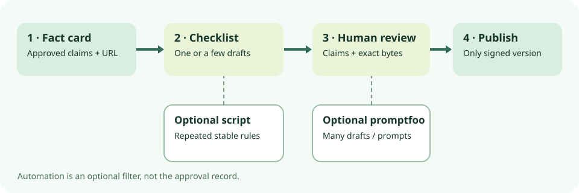

promptfoo 0.124.1 · source audit · 12 Oct 2026 task, checked 13 Oct
Checking AI-written campaign copy? Start with a fact card and a human checklist.
For one draft, write down the approved facts, exact destination, length and prohibited phrases; have a named person check the claims and sign the final text. A tiny version-controlled script is the next option when the same rules recur. Consider promptfoo when a team needs a repeatable matrix across many drafts, prompts or models. This is a source audit, not an executed eval or copy approval.

Choose the smallest check
| Route | Use it when | Stop condition |
|---|---|---|
| Human checklist | One or a few drafts; rules or offer facts change often. | Keep it if repeatable automation would cost more than it saves. Record the fact-card version, reviewer and approved text. |
| Tiny version-controlled script | The same exact-URL, phrase and length rules recur. | Test known pass and fail examples; keep human claim review. Stop here if there is no multi-prompt/model matrix. |
| promptfoo 0.124.1 CLI | Many candidate outputs, prompts or models need one inspectable assertion matrix. | Adopt only after a pinned, isolated trial confirms behavior, storage and network boundaries. A passing eval is not approval. |
A fictional sign-off example, not a test result
The fictional “Field Notes” fact card says its informational guide is free, approves exactly https://example.invalid/field-notes, and approves no discount, speed or guaranteed-result claim. The copy owner adds a 120-character limit, counting spaces and the URL, and rejects “guaranteed results” and “instant approval.” .invalid is deliberately non-live. The fact card and rule version belong in the approval record.
| Synthetic draft | Expected rule review | Still needs a person |
|---|---|---|
| “Read the free Field Notes guide: https://example.invalid/field-notes” | Expected to satisfy the stated URL, length and phrase rules. No promptfoo result was observed. | Confirm “free” against the current fact card and the live approved destination before actual use. |
| “Get guaranteed results and instant approval. Save 50% today: https://example.invalid/field-notes” | Negative phrase rules can reject the two listed claims. The approved URL appearing does not save this draft. | “Save 50%” is also unsupported. A finite phrase list cannot find every invented offer. |
Save the final text bytes or hash, fact-card and rule versions, reviewer, timestamp, approved destination and publication proof. Recheck after any copy, URL or fact change.
What the inspected promptfoo version supports
At the 13 October check, the release list showed promptfoo CLI 0.124.1 (8 October) as the newest CLI release in its visible list. A separately labelled code-scan-action release had GitHub’s “Latest” badge; that badge is not a newer CLI version. The tagged repository licence and package metadata say MIT for the package; package metadata requires Node >=22.22.0. Pin the exact package and lockfile in a local project and inspect the installed artifact. MIT does not cover Promptfoo Cloud, model providers, hosted graders or all dependencies.
The tagged CLI source names --assertions, --model-outputs, --output, --no-write, --no-cache and --no-share. Current first-party docs show assertions against precomputed JSON outputs; that narrow route need not call a generation provider. The command was not run here. Docs are living examples, while the option names were checked at the tag. Model-graded, embedding, moderation and webhook assertions may call services, so do not call them deterministic-only.
For the fictional rules, an exact structured URL extraction or tightly anchored regex is safer than plain contains: a draft can contain both the approved and a rogue link. A message-wide equals is too brittle if wording may vary. The deterministic assertion docs list comparison and regex routes; any 120-character rule must specify Unicode counting and normalization. JavaScript assertions execute code. A phrase scan can miss variants or falsely reject quoted context. Avoid a score threshold that lets a failed mandatory URL rule be offset by style passes; the threshold docs describe test-level override behavior. These are suggested checks, not an executed configuration.
Private copy, storage and network boundaries
The current installation docs place config, history and cache under ~/.promptfoo or PROMPTFOO_CONFIG_DIR; self-hosting docs describe local SQLite promptfoo.db. The tagged CLI docs document --no-write and --no-cache. An explicit export can include prompts, outputs, tests and config per the output docs. Treat local databases, exports, logs, caches, viewer and backups as copy-bearing records; control access and retention. Those flags do not mean “nothing is saved.”
Precomputed-output evaluation is not automatically offline. Tagged telemetry docs say metadata telemetry and an npm update check are on by default and name PROMPTFOO_DISABLE_TELEMETRY=1 and PROMPTFOO_DISABLE_UPDATE=1. Tagged source also shows a possible one-time opt-out event. The flags alone do not prove zero egress. Use approved network isolation and scoped credentials, then verify traffic in the actual pinned artifact before making an offline claim.
The tagged security policy treats config, scripts, providers, hooks, transforms and assertions as trusted code with the user’s permissions. Tagged JS assertion docs even show a network-fetching assertion. Current docs describe a safe-mode option but explicitly not a sandbox; this option was not confirmed for the inspected 0.124.1 baseline. Do not run an untrusted PR’s eval config with campaign credentials or real customer copy.
Evidence limit and next controlled step
No pinned executable, installed npm bytes, eval, synthetic fixture, model call, traffic capture or campaign data was run. DNS in the research shell was unavailable. Assertion verdicts, exit behavior, local artifact contents and safe-mode availability at 0.124.1 remain unverified. If the checklist or script is insufficient, an approved isolated test with synthetic outputs can check known pass/fail cases, filesystem writes and outbound traffic. Keep real campaign approval and publication outside that test.